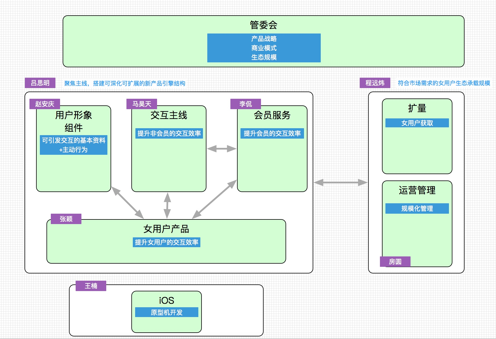

目标
长期目标
持续研发和运营满足用户和市场需求的婚恋交友产品
中期目标
- 通过生态运转建立新产品市场竞争能力；
- 进一步优化组织和流程，为未来多产品和多平台做好准备：
短期目标
- 聚焦拍拖引擎的主线，进化男用户和女用户生态的交互方式，搭建可深化可扩展的新产品引擎结构，为下一步多产品化作准备；
- 符合市场需求的女用户生态承载规模，着眼规模化边际成本降低。
- 搞定最优的多产品启动方案。
业务进展

上周已经按上面的图示进行了3块组织梯队的分工，由于是刚开始启动，大量的工作在同各管理者之间的沟通，并着手建立各个模块间的横向沟通机制。
核心几个管理者已经让各位在仔细研读『领导梯队』教科书，明确各领导者 在其位，谋其事。接下来会以运委会的方法论来教练各位管理者。
1. 核心引擎
目标： 聚焦拍拖主线，通过以『诚意』为起点的男女连接方式，不断提升男女用户间的交友效率。真实为男女用户交友提供价值（价值以交友效率为体现）。 同时将该引擎打造成可扩展的结构，为多产品接入做准备。
确定 吕思明 为该部门的管理者，改变以往的工作方式，通过分工协作完成核心引擎大目标，通过教练思明来达成目标。
2. 生态承载量
目标： 能提供符合市场端需求的女用户生态承载量；
程远炜 暂代该部门的管理者，以是否能完成目标和手段来明确其能力。 当前路径和风险基本确定。
3. 多平台
王楠在iOS上采取跟随战略，目前App Store已经能提供4月份的下载。
下周会同营销中心了解市场端需求，以提出这个平台的目标。
4. 多产品启动
该部门还在同运营部和boss探讨实现方式，争取下周出结果。